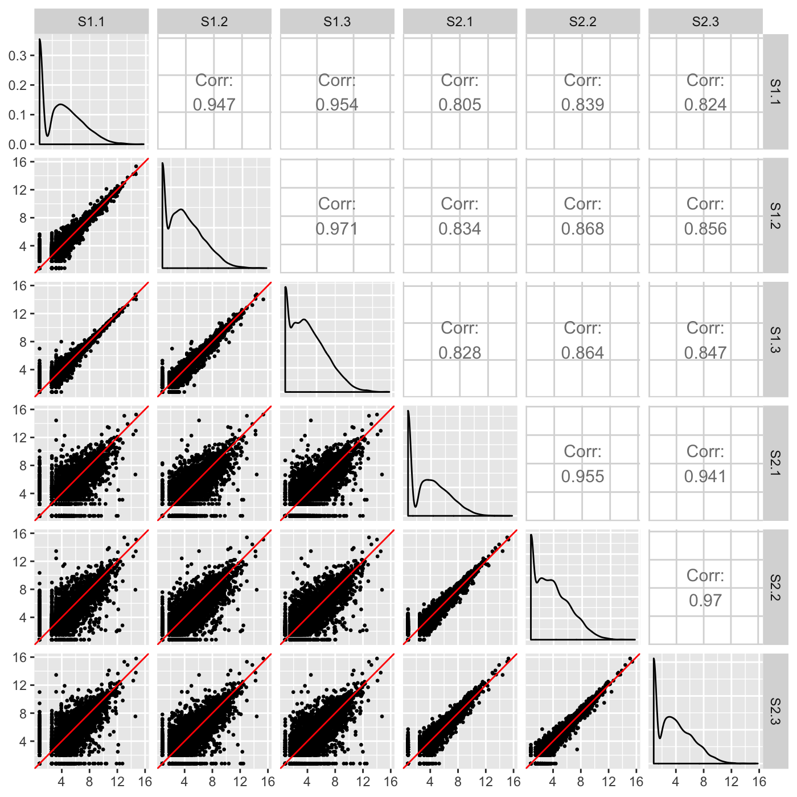
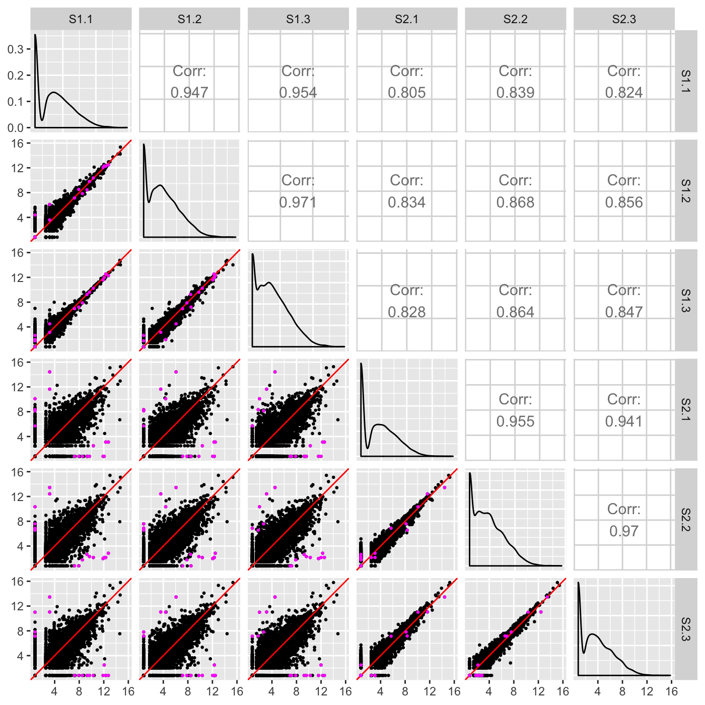
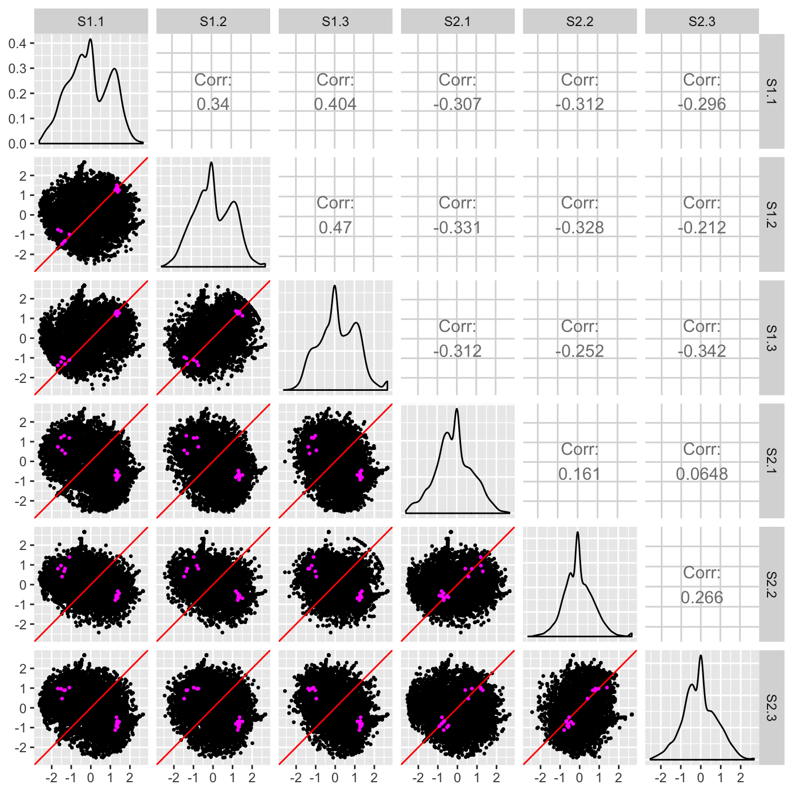
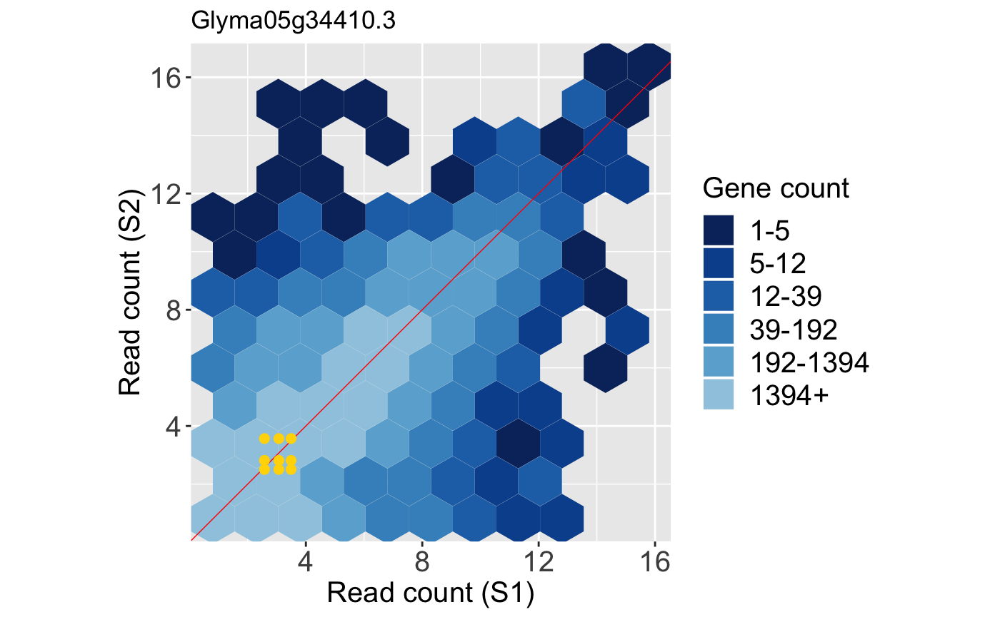
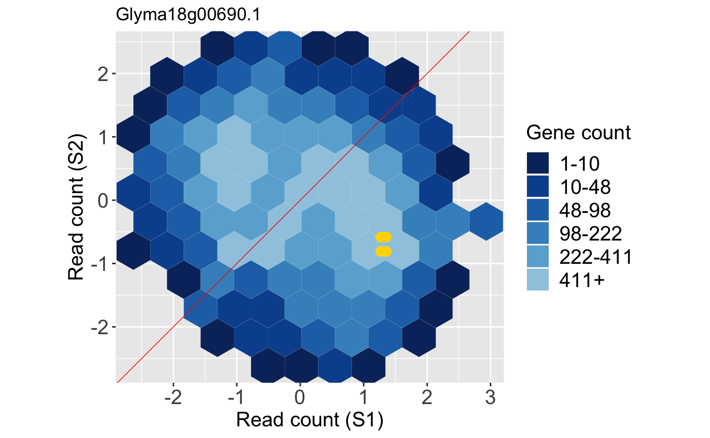
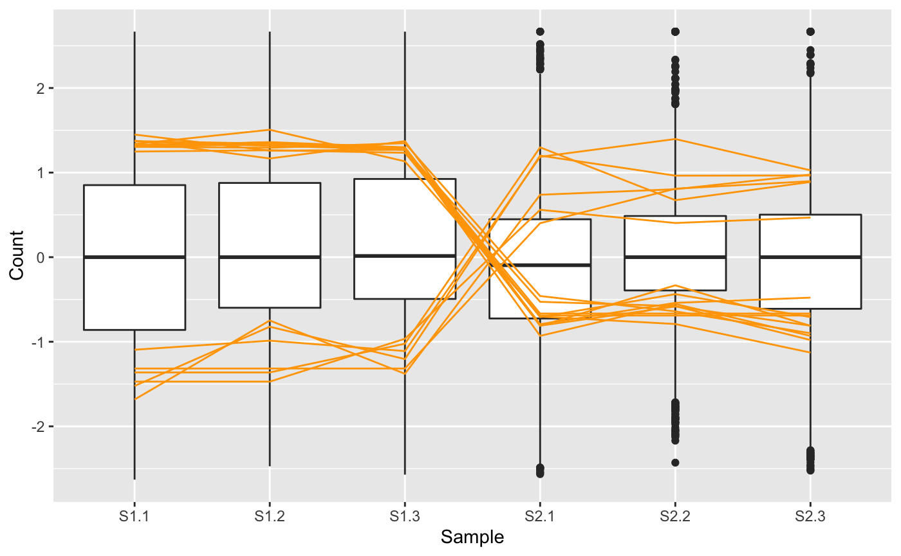
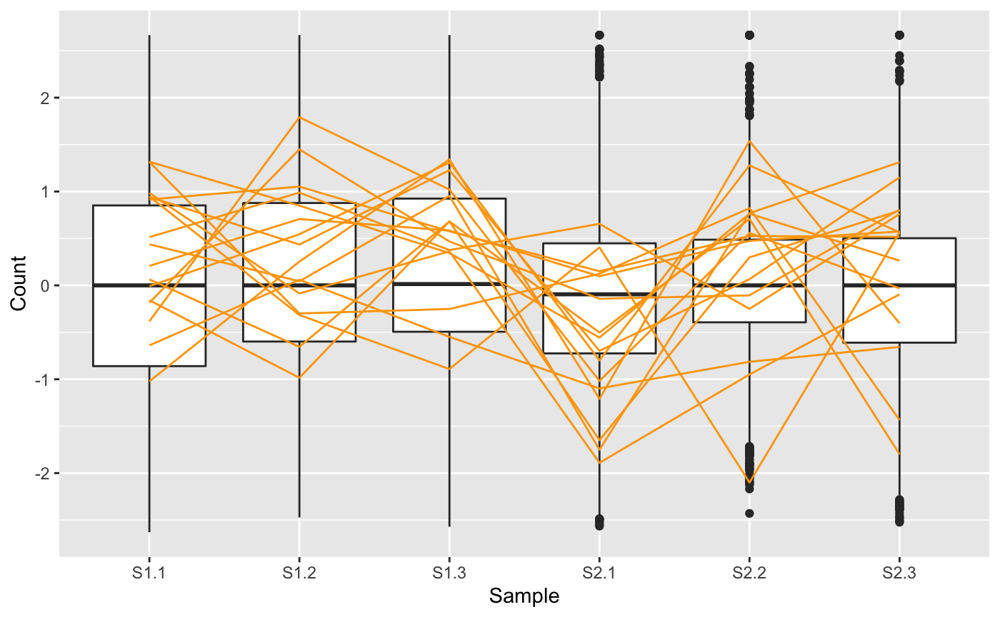
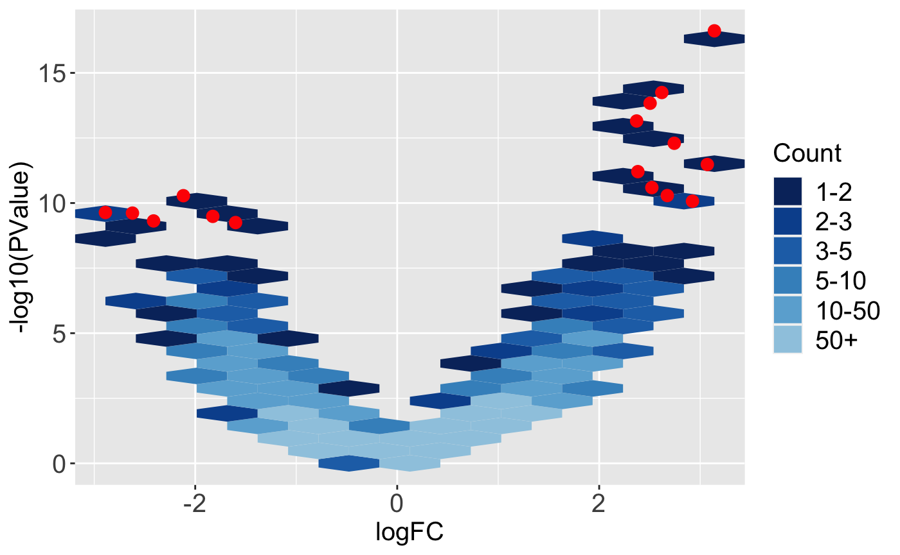

vignettes/plotIntro.Rmd
plotIntro.RmdThe bigPint package focuses on four plotting techniques that can uncover a wealth of information in biased multivariate data: scatterplot matrices, litre plots, parallel coordinate plots, and volcano plots. These tools can detect normalization problems, significance designation problems, and common errors in the analysis pipelines. Below, we briefly describe the interpretation of the four visualization methods. While these plots can be used for any multivariate dataset, we focus on the interpretation for RNA-sequencing data. For this purpose, we use a clean dataset soybean_cn_sub derived from soybean cotyledon at different time points. We will consider two treatment groups (S1 and S2) that each have three replicates (Brown and Hudson 2015).
A scatterplot matrix is a useful multivariate plotting tool that draws read counts across all genes and samples. It represents each case (gene) as a point in each scatterplot. Users can quickly evaluate the association between multiple variables in a manner that is unique from most common practices.
Within each scatterplot, most genes should fall along the x=y line (in red) as only a small proportion of them should show differential expression. However, the nine treatment scatterplots (bottom-left corner of the matrix) should have more spread around the x=y relationship than the six replicate scatterplots (top-left and bottom-right corners of the matrix); this is because some genes will show larger variability between treatments than between replicates.

Users can easily overlay the differentially expressed genes (DEGs) returned from a given model onto the scatterplot matrix. This allows users to immediately assess the associations between samples that ``significant genes’’ show compared to that shown by all genes in the dataset. The figure below shows DEGs superimposed as pink points. We expect for DEGs to fall along the x=y line for scatterplots between replicates and deviate from the x=y line for scatterplots between treatment groups, which the figure below confirms. If a user does not observe this expected pattern of DEGs, then the DEG calls from the model may need to be scrutinized further.

We note that the DEG superimposition on the above scatterplot matrix may be hard to interpret. This may be because of the few number of DEGs. In cases like this, it can be useful to standardize the data before plotting. Below, we now standardize the data so that each gene has a mean read count of 0 and standard deviation of 1 across its samples. We can verify more clearly now that the DEGs appear as expected: They fall along the x=y line in replicate scatterplots but deviate from the x=y line in treatment scatterplots.

Above, we showed how to view DEGs onto the Cartesian coordinates of the scatterplot matrix. Unfortunately, the scatterplot matrix becomes limited in cases with a large number of samples because we then must cram too many small scatterplots into the matrix. Researchers could benefit from additional visualization tools that allow them to verify individual DEGs returned from a model. In light of this, we developed a plot that allows users to visualize one DEG of interest onto the Cartesian coordinates of one scatterplot matrix. The plot we introduce here is an extension of the “replicate line plot” that was developed by researchers using microarray data with two replicates(Cook et al. 2007). Our new plot can be applied to datasets with two or more replicates. We call this new plot a repLIcate TREatment (“litre”) plot.
In the litre plot, each gene is plotted for each combination of replicates between treatment groups. For example, there are nine ways to pair a replicate from one treatment group with a replicate from the other treatment group in the soybean cotyledon dataset (S1.1 and S2.1, S1.1 and S2.2, S1.1 and S2.3, S1.2 and S2.1, S1.2. and S2.2, S1.2 and S2.3, S1.3 and S2.1, S1.3 and S2.2, and S1.3 and S2.3). Therefore, each gene in this data would be plotted as nine points in the litre plot. With 7,332 genes in this data, we would need to plot 65,988 points. This can slow down the drawing process and create overplotting issues (where it is difficult to determine the number of points in a given area because so many points have been plotted over each other in that specific area). As a result, we use hexagon bins to summarize this massive information. Once the background of hexagons has been drawn to give us an idea of the distribution of all between-treatment sample pair combinations for all genes, the user can superimpose the nine points of one gene of interest.
Below is an example litre plot. Notice from the legend that a large number of the replicate treatment values fall along the x=y line because we expect most genes in the data to not show differential expression. The specific gene we are superimposing is a DEG. In fact, it is the gene with the lowest FDR value returned from a model. The nine overlaid yellow points are superimposed in a manner we would expect from a DEG: They are located far from the x=y line (difference between treatments) and are close to each other (similarity between replicates).
In contrast, below is an example litre plot for a gene that had a large FDR value in this dataset and was far from being called a DEG in the model. The nine overlaid yellow points are superimposed in a manner we would expect from a non-significant gene: They are far from each other (dissimilarity between replicates) despite having low counts and actually overlap the x=y line (showing no difference between treatments).

Note that, again, we can standardize the data before creating litre plots. This can sometimes magnify subtle patterns for easier interpretation. Here, we standardize so that each gene has a mean read count of 0 and standard deviation of 1 across its samples. The resulting standardized DEG litre plot is shown below:

And the resulting standardized litre plot for the non-DEG is shown below:
Parallel coordinate plots are crucial to visually verify the relationships between samples in multivariate data. A parallel coordinate plot draws each case (gene) as a line. Connections between samples with positive correlations are flat, and connections between samples with negative correlations are crossed. As an example, we show below the DEGs from the soybean cotyledon dataset superimposed as orange lines on a side-by-side boxplot. The side-by-side boxplot shows the read count distribution across all genes in the dataset. Together, the user can quickly ascertain how the read counts of the DEGs (orange parallel coordinate lines) compare to the dataset as a whole (side-by-side boxplot). Note that we optionally chose to standardize the dataset before plotting so that each gene has a mean of zero and a standard deviation of one across its samples (Chandrasekhar, Thangavel, and Elayaraja 2012).

We note that in the plot above, the 16 DEGs appear as expected: They have consistent (level) replicates but cross between the treatment groups indicating differences in response to treatments. For didactic purposes, we next repeat this same procedure, only now we examine the subset of 16 genes from this dataset that had the highest FDR values from the model (i.e. that demonstrated the least similarity to DEGs).

The parallel coordinate plot here confirms what we expect for genes with high FDR values: There is inconsistency between replicates and no observable difference between treatment groups. The article Hierarchical clustering demonstrates the use of the parallel coordinate plot to understand general patterns in the dataset.
The volcano plot is another useful form of the scatterplot that has become increasingly common for the analysis of omic datasets (Ritchie et al. 2015). One axis maps a measure of statistical significance from a statistical test (such as p-value) and the other axis maps a magnitude of change. As a result, the user can quickly examine how statistical significance and magnitude change associate in the dataset. Importantly, they can also determine which data points (genes) demonstrate both statistical significance and large magnitude change.
Below, we superimpose the 16 DEGs from the soybean cotyledon dataset as red points onto a volcano plot. We again use hexagon bins to summarize the full dataset and reduce overplotting problems. We can confirm that these 16 DEGs in general have both high magnitude and statistical significance.

While volcano plots are common in other RNA-seq visualization packages, we also include an interactive version in the bigPint package, which can be viewed in the article Producing interactive plots or on the help manual for the interactive volcano function, plotVolcanoApp().
Brown, Anne V., and Karen A. Hudson. 2015. “Developmental Profiling of Gene Expression in Soybean Trifoliate Leaves and Cotyledons.” BMC Plant Biology 15 (1): 169.
Chandrasekhar, T, K Thangavel, and E Elayaraja. 2012. “Effective Clustering Algorithms for Gene Expression Data.” International Journal of Computer Applications 1201: 4914.
Cook, D, H Hofmann, EK Lee, H Yang, B Nikolau, and E Wurtele. 2007. “Exploring Gene Expression Data, Using Plots.” Journal of Data Science 5: 151–82.
Ritchie, Matthew E., Belinda Phipson, Di Wu, Yifang Hu, Charity W. Law, Wei Shi, and Gordon K. Smyth. 2015. “Limma Powers Differential Expression Analyses for Rna-Sequencing and Microarray Studies.” Nucleic Acids Research 43 (7): e47–e47.